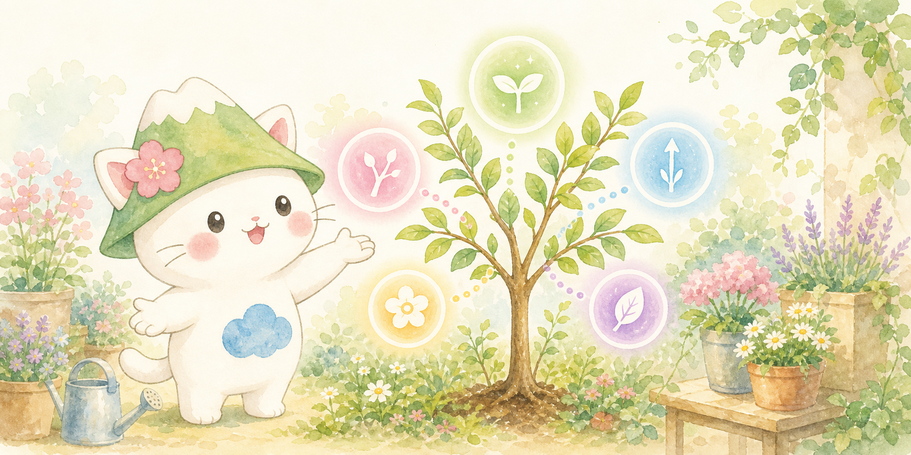

植物生理
果樹・庭木
初心者向け
はじめての植物ホルモン入門
案内役キャラクターと一緒に、5大植物ホルモンの働きと、 果樹・庭木の管理や剪定への生かし方をやさしく学べる読み物ページ。
harunami Plant Base は、植物の基礎知識を、庭木や果樹の管理へどう生かすかという観点で整理する小さな植物サイトです。 単なる用語集ではなく、時期ごとの作業、観察ポイント、失敗しやすい点まで、図解と本文でつなげていきます。
このサイトの使い方
まずは興味のあるテーマのページから読み始め、必要に応じて基礎ページと実践ページを往復すると理解しやすいです。 たとえば、剪定の理由が気になるときは植物ホルモンのページへ、具体的な作業手順を見たいときは樹種別ページへ進めます。
現在の方向性
1. 植物生理の基礎を、園芸管理へ落とし込んで説明する。
2. 黒松のように管理の難しい樹種は、時期別・手順別に切り分ける。
3. 図解は本文の補助に徹し、誤解しやすい部分は本文で補足する。
現在は、植物ホルモンの基礎ページと、黒松の剪定ガイドを公開しています。どちらも図解つきの読み物として構成しています。
園芸の情報は、作業名だけが先に独り歩きしやすい一方で、なぜその時期にその作業をするのかが抜けがちです。 harunami Plant Base では、その背景までつなげて説明することを目指しています。
植物ホルモンや樹の生理を、実際の剪定や管理の判断へ結び付けて整理します。
図だけで分かった気になるのを避けるため、図解は要点整理、本文は誤解しやすい部分の補足に使います。
専門家向けの高度な技術をそのまま持ち込まず、庭木・果樹として現実的な手順を優先します。
次のページ候補としては、松の仲間の比較、庭木の剪定時期一覧、植え付け後の水管理、花木と果樹の違いなどが相性のよいテーマです。
黒松のように時期や手順が分かりにくい樹種は、個別ページにすると役立ちやすいです。赤松、五葉松、梅、柑橘なども候補になります。
葉色、枝の勢い、落葉、徒長枝の出方など、見た目から判断する早見表を増やすと、実際の作業に結び付きやすくなります。